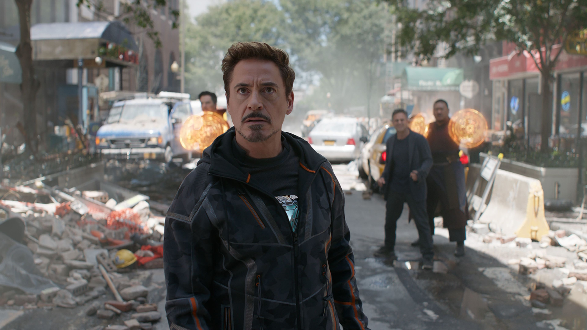

Usianya sudah 54 tahun. Kerutan wajahnya sudah tidak bisa dihindari. 11 tahun yang lalu, Robert Downey Jr. sudah memerankan karakter superhero ikonik Iron Man dari tahun 2008. Sejak saat itu, ia seperti tidak pernah absen berada dalam deretan film-film MCU. Pengakuannya “I am Iron Man” menjadi mahakarya yang tidak akan terlupakan dan tentu saja di film terakhirnya, Avengers: Endgame.
Film ini yang memang menjadi sorotan saat ini. Plot cerita Avengers: Endgame yang sulit ditebak menjadi sebuah cerita yang akan sulit untuk dilewati menjadikan karakter ini juga sebagai karakter kunci. Mungkin terlewatkan bagi kamu. Namun, BookMyShow punya beberapa fakta terkait dengan sosok Tony Stark alias Iron Man yang diperankan oleh Robert Downey Jr. Berikut beberapa diantaranya.
Kami tidak akan bosan mengulang bahwa sutradara Iron Man pertama, Jon Favreau, , punya alasan tersendiri memilih Robert Downey Jr. memerankan karakter Tony Stark alias Iron Man. Gaya hidupnya yang buruk dan pernah frustasi di dunia nyata menjadi ilham dari sosok Iron Man. Tony Stark yang diperankan oleh Robert Dwoney Jr. digambarkan sebagai orang kaya yang semen-mena. Ia suka mengambil keputusan sendiri tanpa memikirkan orang lain.
Buktinya, banyak yang skeptis terhadap sosok Tony Stark. Bahkan Tony Stark selalu menjadi pemicu keributan. Kamu masih ingat bagaimana ia berselisih dengan Steve Rogers alias Captain America. Bahkan, saat dunia sedang kacau diserang pasukan Thanos di film Infinity War, Tony Stark masih sempat berselisih pendapat dengan Dr. Strange. Kehidupan yang buruk ini akhirnya memicu masalah tersendiri. Namun, pada intinya Tony Stark adalah orang baik. Ia begitu sayang pada Peter Parker (Spider-Man). Apalagi pada Peper Pots, asisten yang kemudian menjadi cinta sejatinya. Secara keseluruhan, kamu akan melihat sendiri bagaimana Iron Man di film Avengers: Endgame. Ia adalah pria baik.
Perencana Avengers tentu saja adalah Nick Fury. Namun, ada nama Tony Stark dibalik semua itu, Jika tak ada Tony Stark, maka sangat kecil kemungkinan Hulk bisa bergabung. Selain itu di Iron Man 2, pertemuannya dengan Natasha Romanoff juga asik untuk ditelusuri. Meski kerap berbeda pendapat, namun Tony selalu berada menjadi penyeimbang di antara superhero.
Ah, satu lagi, ia juga memberikan kepercayaan yang begitu besar Rhode (War Machine) dan tentu saja Peter Parker (Spider-Man) sebagai anggota Avengers. Bersama Tony pula ia bisa menyatukan Guardian of Galaxy sebagai salah satu pelindung bumi, bahu-membahu mengalahkan Thanos.